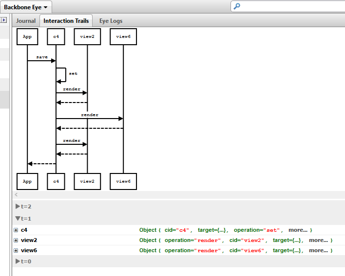
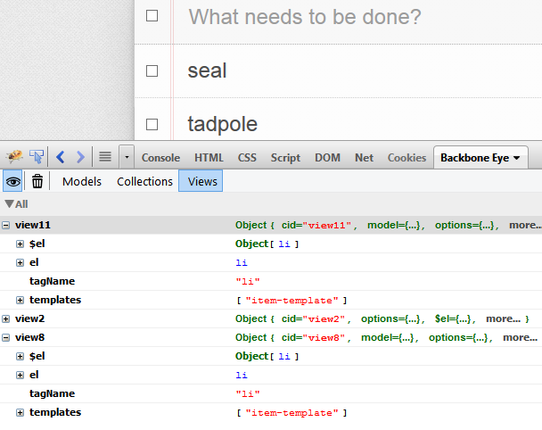

Get Started
Backbone Eye extends the popular
Firebug plugin for Firefox. Once installed successfully, a new tab called Backbone Eye will appear in Firebug.

Navigate to an URL to begin introspecting. To explain the various features of Backbone Eye, we will use the
Backbone TODO application as our reference application.
Models Section
This section lists out all the models which were discovered by Backbone Eye and is the starting point for discovering model behavior.
 |
Pinned : Right click and select "Pin model" a model of interest to pin it. (Similarly to "Un Pin Model") All pinned models will reside in this section.
Most Used : Try to identify which models are most used by the application. Uses model access statistics to populate this list.
All : Lists all the models which were discovered - including destroyed models.
|
Backbone Eye only enumerates the application level model properties and hides the internal Backbone properties. Internal properties can be accessed - if so desired - in the journal and interaction flow views.

Pin point models to introspect by searching for model attribute values. Once the model to introspect is identified, it can be pinned down for future reference.
| Pin a model | Un Pin a model |
 |  |
Search can be either case sensitive or case insensitive. Valid search strings are
- attributename:value
- (partial) or full attribute name
| Search by partial attribute values |
 |
| Narrow further by specifying a attribute name | |
 |
Models which have recent updates are shown momentarily with a yellow band to indicate that activity has happened on the model.

Click on the model to view it's
journal or
interaction stream.
Interaction Stream
This section shows a sequence of interactions which have occurred on the selected model or collection as a result of standard Backbone operations like save, fetch, set, destroy, reset and sort among others. There are two aspects to this section of the tool. One is the graphical plot - which shows the actors involved and the operations which flow between the actors. By default, the last interaction is shown.

The other view is the tabular view - which is more detailed. It has a time listing of various interactions from t=n all the way down to t=0. Clicking on a discrete time slot will show the interaction view corresponding to that time slot. The state of the model, the various argument values passed in - all at that time instance - are preserved for inspection. This will give a perspective of how the model and other participants have interacted over time in response to various messages which were passed to them.
In complex applications, this data can grow. To reduce this, click on the clear button.


Also, to stop recording on interaction and journal data, click on the recording button.

To start recording, click on the record button again.

Journal
Unlike the
Interaction stream, the journal perspective shows all the activities which have happened on that model or collection at various time slots. It therefore provides a quick way to see how the model state has evolved over a period of time and what actions were performed on that model or collection.

Views
A simple listing of view objects discovered by Backbone Eye. Backbone Eye infers templates which may have been used to render the views. In case a template id was not specified in the application, a SHA is computed from the content of the template. This becomes the surrogate key of the template. Just like models and collections, views can be searched by it's attributes.

Click on a view object to see the corresponding screen highlighted in the application.

Alternatively, using the inspector, a screen in the application can be selected and the corresponding view will be highlighted. Will be useful to work down from the application screens to the corresponding Backbone View.

View templates can now be debugged! The list of templates discovered by Backbone Eye are now present in the source box of the script section of Firebug.

The Javascript code to transform the the template is shown in the source box. The source is commented with the template tags so it is easy to see what code transforms that template snippet. The script panel has a new side-panel : Views. When a SPA template is being debugged, this panel becomes active and shows the data being passed to the template, the source template and the incremental template string being populated with data as the debugger steps through the template building process.